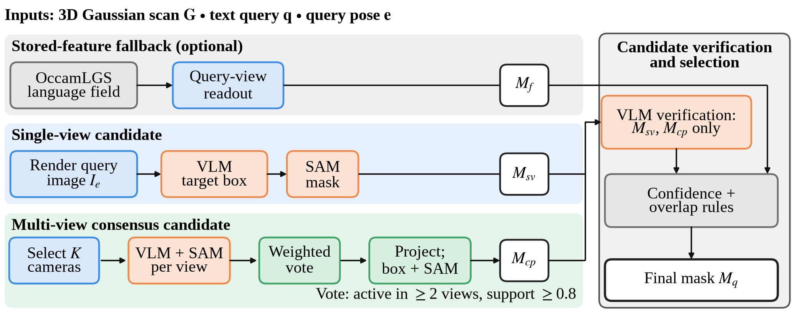
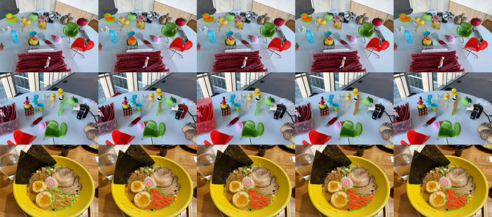
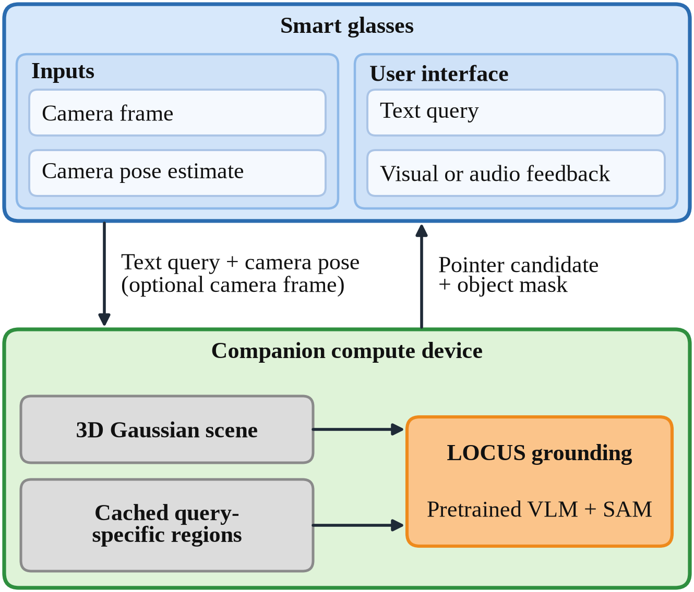
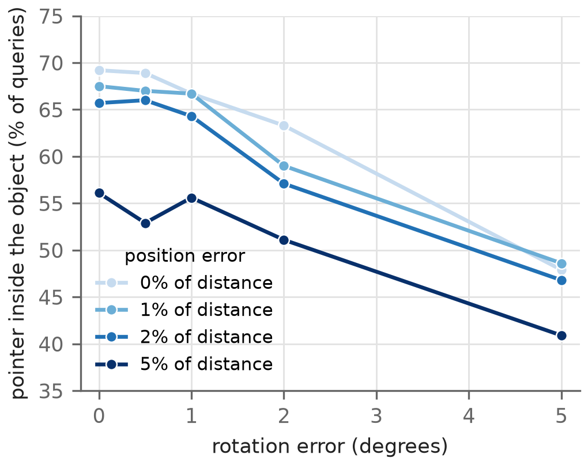

Helping users locate small objects in previously scanned environments is an important capability for smart eyewear. This requires grounding natural-language queries in a 3D scene, where small objects and visually similar instances remain challenging for stored language-feature fields. We present LOCUS, a method for open-vocabulary object grounding in 3D Gaussian scenes that requires no additional task-specific training. Given a query, LOCUS uses a pretrained vision-language model and SAM to segment the target across several rendered views. Center-based, visibility-weighted multi-view consensus identifies a supporting set of Gaussians, which guides segmentation in the query view, followed by vision-language verification of candidate masks.
On LERF-OVS, a 4B model using four views achieves 80.8 mIoU, compared to 61.1 for a stored-feature baseline reproduced in our pipeline and 65.0 for the strongest published baseline, whose results use different reconstructions. On 85 small-object queries, it achieves 72.7 mIoU, compared to 50.6 for the stored-feature baseline. In a selection replay without stored language features, it retains 80.4 mIoU overall. We also analyze resource requirements for a proposed glasses-and-companion architecture in an offline study, without on-device evaluation.

Overview of LOCUS. Single-view VLM localization and SAM segmentation produce Msv, while center-based, visibility-weighted multi-view voting guides the consensus candidate Mcp. The VLM verifies these two candidates, and the confidence and overlap rules select the final query-view mask Mq, with the stored-feature mask Mf available as a fallback. The grounding pipeline requires no additional task-specific training.
Given a reconstructed 3D Gaussian scene, a camera pose, and a text query, LOCUS predicts the target mask in the query view. It selects a small set of existing training cameras by k-means over camera positions, runs Qwen3-VL to localize the target and SAM to segment it in each rendered view, and lets the views vote on which Gaussians belong to the target. The voted region is projected into the query view to guide segmentation, and the VLM then verifies the consensus candidate against a single-view candidate. This separates multi-view evidence for which object and where from precise mask generation.
| Method | ramen† | figurines | teatime | waldo_kitchen | mean | w/o† |
|---|---|---|---|---|---|---|
| LERF | – | – | – | – | 37.4 | – |
| GOI | 33.7 | 23.9 | 55.8 | 54.5 | 42.0 | 44.7 |
| LangSplat | 51.2 | 44.7 | 65.1 | 44.5 | 51.4 | 51.4 |
| GAGS | 46.8 | 53.6 | 60.3 | 55.8 | 54.1 | 56.6 |
| GALA | 35.1 | 59.4 | 76.7 | 50.8 | 55.5 | 62.3 |
| LangSplatV2 | 51.8 | 56.4 | 72.2 | 59.1 | 59.9 | 62.6 |
| OccamLGS | 51.0 | 58.6 | 70.2 | 65.3 | 61.3 | 64.7 |
| OpenGaFF | 53.8 | 64.3 | 76.1 | 65.8 | 65.0 | 68.7 |
| LOCUS, 8B, 12 views | 82.0 | 76.7 | 82.7 | 77.0 | 79.6 | 78.8 |
| LOCUS, 4B, 4 views | 79.6 | 77.9 | 86.9 | 78.7 | 80.8 | 81.2 |
Published baseline values are taken from their respective papers, except LERF's 37.4, as reported by LangSplat. † denotes the scene used to select default settings; “w/o†” averages the other three scenes. Published baselines use different reconstructions.
| Object size | Queries | Stored feature | LOCUS 8B | LOCUS 4B |
|---|---|---|---|---|
| Small (< 1%) | 85 | 50.6 | 71.5 | 72.7 |
| Medium (1–4%) | 80 | 58.0 | 86.5 | 83.5 |
| Large (> 4%) | 43 | 69.9 | 85.9 | 93.4 |
Queries are grouped by ground-truth mask area as a fraction of image area.

Rows: rubber duck with buoy, bag, wavy noodles. Columns show the query view with ground truth in green, the stored-feature prediction, the single-view candidate, the consensus-guided candidate, and the selected output. Predictions are filled in red. For rubber duck with buoy, multi-view guidance corrects the selection of a different duck. For bag, it recovers a target the single-view candidate missed. For wavy noodles, the selected output uses the stored-feature fallback. All query images shown are rendered from the scan.

Proposed glasses-and-companion architecture. Glasses send a query, pose, and optional frame; the companion stores the scene, models, and cached regions, and returns a pointer and mask. Costs were measured on an H100; end-to-end wearable operation is unevaluated.

Pointer success under synthetic camera-pose perturbations, evaluated against the ground-truth mask at the original query pose. Translation magnitudes are relative to camera-to-object distance; each setting uses three random draws over all 208 queries.
The compact 4B, four-view configuration needs about 8.6 GB of VLM memory, compared with 16.6 GB for the 8B reference. Stored language features would add 2.2–13.2 GB per scene on top of 183–527 MB of geometry, yet removing them in a selection replay keeps 80.4 mIoU. With real photographs instead of rendered query images, the 4B model reaches 82.6 mIoU.
@misc{ghimire2026locus,
title = {LOCUS: Training-Free Multi-View Object Grounding for Smart Eyewear},
author = {Ghimire, Bipin and Sheshappanavar, Shivanand Venkanna},
year = {2026}
}